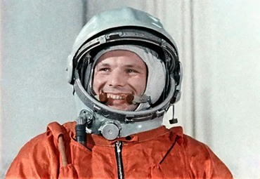
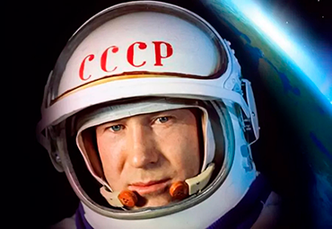
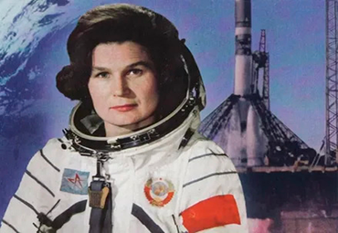
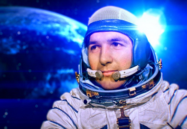
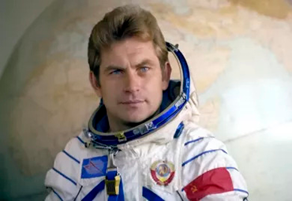
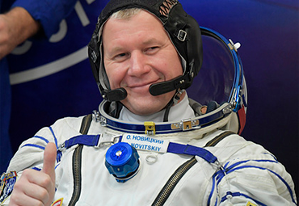

Время первых: первый космонавт, первый человек в открытом космосе, первая женщина -
космонавт и первые
космонавты уроженцы БССР
1961, СССР: Юрий Гагарин становится первым человеком покорившим космос.
1965, СССР: Алексей Леонов становится первым человеком, который побывал
в
открытом космосе.
1963, СССР: Валентина Терешкова стала первой женщиной в космосе.
1973,1975,1978, Белорусская ССР: Петр Климук стал первым белорусским
космонавтом.
1977,1978,1981, Белорусская ССР: Владимир Ковалёнок космонавт группы
орбитальных
кораблей и станций отряда космонавтов.
2012,2016,2021 Белорусская ССР: Олег Новицкий возглавил корабль «Союз
ТМА-06М»